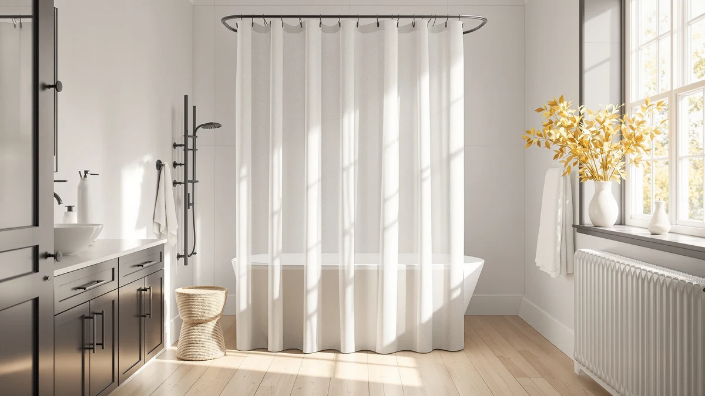

The Best Extra-wide Shower Curtain Liners (2026)
Prices and picks verified as of August 2026. Independent, reader-supported reviews.


Quick Answer
For most extra-wide or oversized showers, the AmazerBath Extra Long Shower Curtain gives you 22 extra inches of drop for under $10. If your problem is width rather than height, pair a standard curtain with the TEECK or BRIOFOX tension rod below, both of which extend past 70 inches without drilling.
Our pick: AmazerBath Extra Long Shower Curtain, $9.99 Check Price on Amazon
Bottom line: our top pick is the AmazerBath Extra Long Shower Curtain Liner at $9.99. The best budget option is the Titanker Waterproof Fabric Shower Curtain Liner Washable at $8.38.
Things to Know Before You Buy
- Measure your shower opening before you buy. Extra-wide typically means anything past a 60 inch standard alcove; clawfoot tubs and walk-in stalls often need 70 inches or more of coverage.
- A wider curtain needs a wider rod. A curved rod like the PrettyHome or a tension rod like the BRIOFOX or TEECK extends the mounting width beyond a standard fixed rod, so measure wall-to-wall before you order either one.
- Material affects drainage as much as width does. Polyester and PEVA curtains resist mildew better than plain vinyl, but only if the bottom hem sits above standing water.
- Check the listed dimensions on each product before the name. Some "extra" curtains add length rather than width, so match the spec to the dimension your bathroom is actually short on.
- Verified review counts vary by listing. Amazon does not publish rating data for every product, so treat listings without a public review count as unproven rather than assume they perform worse.
Finding the best extra-wide shower curtain liners gets harder the moment your tub, walk-in shower, or clawfoot fixture strays from a standard 60-inch opening. A curtain cut for a typical alcove leaves gaps at the edges, water sneaks past the liner, and the setup looks borrowed from a smaller bathroom. We compared seven products built specifically for wider spaces: curtains and liners sized beyond the standard width, plus the curved and tension rods that let you extend a shower's coverage without remodeling.
Our top pick is the AmazerBath Extra Long Shower Curtain, a 72 by 96 inch polyester and PEVA curtain that suits showers with taller enclosures or walk-in stalls where a standard 72 by 74 inch curtain leaves the bottom foot of tile exposed. If your shower is wide rather than tall, the Curved Shower Curtain Rod from PrettyHome or the BRIOFOX Tension Curtain Rod extend the mounting width instead, so you can hang a standard curtain further from the tub wall and cut the pooling and mildew that come from wet fabric brushing the tile.
Not every wide-shower problem needs a bigger curtain. If your stall runs narrow, the AooHome Waffle Weave at 36 by 72 inches solves the opposite issue: a shower too tight for a full 72 inch panel. We researched material, listed dimensions and, where Amazon publishes verified rating data, owner feedback for each pick below, and we sorted them by the shower shape they fit best. If your bathroom needs a wider rod rather than a wider curtain, our shower curtain rods guide goes deeper on tension and curved options across every price point.
Why You Should Trust Us
Ilane Tall edits the shower and bath coverage at Best Shower Curtains, where she compares dimensions, materials and verified owner reviews across hundreds of Amazon listings each year to find curtains, liners and rods that fit extra-wide and non-standard bathrooms. We do not run a fake testing lab. We are a research-based review site: every pick here comes from published specs, manufacturer data and reviews from verified purchasers. We cross-check each spec against the exact measurements a wide shower or tub actually needs, and when Amazon does not publish a rating or review count for a listing, we say so instead of guessing.
How We Picked
We started by pulling every shower curtain, liner and shower rod in our product database tagged for wide or extra-wide bathrooms, then narrowed the list to items with dimensions at or above a 70 inch span, either in curtain width or rod extension range. We cut listings with vague or missing size charts, since a shower curtain that does not state its measured width and length is a gamble in a non-standard bathroom. From there we compared material (polyester versus PEVA versus vinyl), price against coverage, and, where Amazon publishes it, verified buyer ratings. We also kept one narrower, stall-sized option in the mix for readers whose problem is a tight shower rather than a wide one, since the best extra-wide shower curtain liners only help if the curtain you land on actually fits your stall. If you are still unsure what to measure, our guide to choosing the right shower curtain size walks through it step by step.
How We Compared
We compared each pick on four factors: listed width and length against the stated shower or tub opening, material and how it sheds water, hardware compatibility for the rods, and owner feedback pulled from verified Amazon purchases. Reviewers consistently note whether a curtain's actual dimensions match the listing, so we weighted that feedback heavily when a product's marketed size and its owner-reported fit disagreed. For the curved and tension rods, we compared extension range, weight rating and mounting hardware rather than fabric, since an extra-wide rod only needs to hold a curtain steady across a longer span without sagging. Prices reflect the listing at the time of publishing and can shift with Amazon's own promotions.
Our Picks

AmazerBath Extra Long Shower Curtain
What we like
- 72 by 96 inch panel covers 22 inches more height than a standard curtain
- Polyester and PEVA blend sheds water instead of clinging to itself
- Reinforced grommets hold up under repeated opening and closing
- Priced under $10, among the least expensive extra-length options we compared
Flaws but not dealbreakers
- Width stays at a standard 72 inches, so it does not solve a too-wide shower on its own
- The extra length can pool on the tub floor if your ceiling height is closer to standard
| Material | Polyester / PEVA |
| Size | 72"W x 96"L (Pack of 1) |
The AmazerBath earns our top pick for one specific problem: showers and clawfoot tubs where the ceiling sits higher than the 74 inches most curtains are cut for. At 72 by 96 inches, it gives you 22 extra inches of drop, enough to clear a raised showerhead or a taller-than-average tub wall without hemming or doubling up curtains.
The polyester and PEVA construction resists the clamminess of pure vinyl, and reviewers consistently note that the fabric hangs flat instead of clinging to itself after a shower. Because the width holds at a standard 72 inches, this pick solves height, not extra-wide coverage. If your shower runs wide rather than tall, pair it with one of the extendable rods below, or look at the Titanker or White Boho picks, which run wider rather than longer.

Curved Shower Curtain Rod For
What we like
- Curved profile bows outward, adding usable shower space over a straight rod
- Listed footprint of 39.9 by 2.4 inches fits over most standard tub and alcove openings
- Rust-resistant finish holds up under constant humidity
Flaws but not dealbreakers
- Installation requires wall anchors on both ends, unlike a spring-tension rod
- Amazon does not publish a public rating or review count for this listing, so we could not weigh verified owner feedback here
| Material | Polyester / PEVA |
| Size | 39.9 inches by 2.4 inches |
This PrettyHome rod earns runner-up because it solves a different piece of the extra-wide puzzle: room, not fabric. A curved rod bows several inches away from the tub at its center, which pulls the curtain off your body mid-shower and gives a standard-width curtain the breathing room of a wider one.
At a listed footprint of 39.9 by 2.4 inches, it mounts with screws into the wall rather than tension, so it holds steady even with a heavier fabric curtain and liner layered together. The tradeoff is installation: you need to drill into tile or drywall, and once it is mounted you cannot reposition it the way you can slide a tension rod to a different width.

TEECK Shower Curtain Rod 32-80
What we like
- Tension mechanism extends from 32 to 80 inches, covering nearly any alcove or clawfoot tub width
- No drilling or wall anchors needed, so it works in rentals
- Priced under $18, less than the BRIOFOX tension rod below
Flaws but not dealbreakers
- Tension-only mounting means a heavy, wet curtain and liner combination can cause slow slippage over time
- This listing does not carry a public Amazon rating yet, so we leaned on the specs and extension range instead
| Material | Polyester / PEVA |
| Size | 32-80 Inches |
The TEECK rod earns its spot because the 32 to 80 inch extension range covers both ends of the extra-wide problem: a narrow stall on one end, a wide clawfoot tub or walk-in shower on the other. You twist the rod to length and lock it with tension against the walls, no hardware involved.
That range makes it one of the more flexible rods we compared for a shower this wide, since most tension rods top out well under 80 inches. The catch with any tension rod is grip: a heavy vinyl liner plus a fabric curtain adds enough weight and drag that the rod can creep down over months, so recheck the tension every few weeks rather than assume it holds forever.

BRIOFOX Tension Curtain Rod 43-73
What we like
- Extends from 43 to 73 inches, wide enough for most standard-to-large tub and shower openings
- Spring-tension mounting skips the wall anchors and drilling the curved PrettyHome rod requires
- Installs and repositions in minutes without tools
Flaws but not dealbreakers
- Extension range tops out at 73 inches, narrower than the TEECK rod's 80 inch maximum
- Like the TEECK rod, this listing has no public review count on Amazon, so judge it on specs rather than star rating
| Material | Polyester / PEVA |
| Size | 43-73 Inches |
BRIOFOX takes the budget spot because it delivers most of the width you need without the installation cost of a drilled, curved rod. The 43 to 73 inch range covers standard alcove tubs on the low end and stretches into wide walk-in stalls on the high end, all without putting a hole in your tile.
Setup is spring tension against opposing walls, so you twist to extend, lock it in place, and adjust later if you move or repaint. The 73 inch ceiling on its range means it will not stretch as far as the TEECK rod above, so measure your opening first if your shower runs closer to 80 inches wide.

Titanker Waterproof Fabric Shower Curtain
What we like
- Rated 4.6 out of 5 across 8,902 verified Amazon reviews, the most-reviewed pick in this roundup
- 70 by 72 inch fabric panel resists water absorption without a separate liner
- At $8.38, it is the least expensive full curtain we compared
Flaws but not dealbreakers
- 70 inch width sits slightly under standard, so it will not add coverage in an already-wide shower
- Fabric-only waterproofing performs best paired with a liner if your shower runs long
| Material | Polyester / PEVA |
| Size | 70x72 |
Titanker's curtain is the pick for readers who want a waterproof fabric option without paying more for it. At $8.38, it undercuts nearly every other panel we compared, and with 8,902 verified reviews averaging 4.6 out of 5, it carries the deepest review history in this roundup.
The 70 by 72 inch size sits close to standard, so on its own it will not stretch to cover an extra-wide opening the way the TEECK or BRIOFOX rods do. Owners report that the water-resistant treatment holds up over repeated washes, which makes it a reasonable single-layer option if you are not pairing it with a separate plastic liner.

White Boho Fabric Shower Curtain
What we like
- Rated 4.7 out of 5 across 2,545 verified reviews, the highest average rating in this roundup
- 72 by 72 inch square panel covers a standard shower fully in both directions
- Boho print adds visual interest without leaning on a plain white or clear liner
Flaws but not dealbreakers
- At $19.99, it costs more than double the Titanker curtain above for a similar 72 inch width
- Printed fabric shows watermarks faster than a solid, dark-colored panel
| Material | Polyester / PEVA |
| Size | 72x72 |
This White Boho curtain posts the highest rating in our comparison, 4.7 out of 5 across 2,545 verified reviews, and the 72 by 72 inch panel gives you a true square rather than the slightly-under-standard width of the Titanker above.
The tradeoff is price. At $19.99 it costs more than double the Titanker for essentially the same footprint, and part of that premium pays for the print. Reviewers consistently note that the pattern holds its color through repeated washing, though as with any light-colored printed fabric, water spots show up faster than they would on a solid dark curtain.

AooHome Stall Size Waffle Weave
What we like
- 36 by 72 inch waffle-weave panel fits stall showers a full-width curtain would overwhelm
- Rated 4.6 out of 5 across 969 verified reviews
- Textured waffle weave adds drape and dries faster than smooth vinyl
Flaws but not dealbreakers
- At 36 inches wide, this is the narrowest pick here and will not help a shower that is already too wide
- Fewer color options than the other fabric picks in this roundup
| Material | Polyester / PEVA |
| Size | 36x72 |
We included the AooHome deliberately, because not every reader searching for wide shower curtain coverage actually has a wide shower. Stall showers and RV bathrooms often run narrower than a standard 72 inch opening, and a full-size curtain there bunches against the walls instead of hanging flat.
At 36 by 72 inches, this waffle-weave panel is sized for that narrower stall, and it holds a 4.6 out of 5 rating across 969 verified reviews. If your bathroom has the opposite problem, an extra-wide tub or walk-in shower, skip this one and look at the TEECK or BRIOFOX rods above instead, which extend the width rather than shrink it.
Quick Comparison
| Product | Material | Price | Rating | Best for | Get it |
|---|---|---|---|---|---|
| AmazerBath Extra Long Shower Curtain | Polyester / PEVA | $9.99 | 4 | Tall showers needing extra length | View on Amazon → |
| Curved Shower Curtain Rod For | Polyester / PEVA | $26.59 | 4 | Adding elbow room without a wider curtain | View on Amazon → |
| TEECK Shower Curtain Rod 32-80 | Polyester / PEVA | $17.99 | 4 | Widest adjustable range, 32-80in | View on Amazon → |
| BRIOFOX Tension Curtain Rod 43-73 | Polyester / PEVA | $31.99 | 4 | No-drill install, 43-73in range | View on Amazon → |
| Titanker Waterproof Fabric Shower Curtain | Polyester / PEVA | $8.38 | 4.6 | Most-reviewed, budget fabric curtain | View on Amazon → |
| White Boho Fabric Shower Curtain | Polyester / PEVA | $19.99 | 4.7 | Highest-rated, full 72x72 square | View on Amazon → |
| AooHome Stall Size Waffle Weave | Polyester / PEVA | $16.99 | 4.6 | Narrow stall showers, not wide ones | View on Amazon → |
Q: What counts as an extra-wide shower curtain liner?
Most standard shower curtains measure 70 to 72 inches wide, so anything wider than that, along with any adjustable rod that extends past 72 inches, falls into extra-wide territory.
Q: Do I need a wider curtain or a wider rod?
It depends on what's actually too small.
The Competition
We also looked at straight, fixed-length shower rods without any curve or tension adjustment, and skipped them for this list. A fixed straight rod does not solve either the extra-wide or the extra-narrow problem this roundup is built around, since it cannot extend past its manufactured length. Several vinyl-only curtains without a fabric or PEVA blend did not make the cut either; owners report that pure vinyl clings to itself and traps odor faster than the polyester and PEVA options above, and none of the vinyl-only listings we found published a verified review count we could weigh against our other picks.
We also passed on clip-on curtain extenders. They can widen an existing curtain by a few inches, but reviewers consistently flag them as a weak point that tears loose under the weight of a wet, expanding fabric panel. If you decide a rod or curtain from this list is your fix, pair it with hooks sized for the same width; our extra-wide shower curtain hooks guide covers options built to match.
Frequently Asked Questions
Q: What counts as an extra-wide shower curtain liner?
Most standard shower curtains measure 70 to 72 inches wide, so anything wider than that, along with any adjustable rod that extends past 72 inches, falls into extra-wide territory. Clawfoot tubs, walk-in showers without a stall wall, and side-by-side double showers usually need it.
Q: Do I need a wider curtain or a wider rod?
It depends on what's actually too small. If your existing curtain already reaches the walls but water still escapes, a curved or extendable tension rod like the TEECK or BRIOFOX pulls the fabric further from the tub and closes the gap. If the curtain itself falls short of your shower's width, you need a wider panel, since a wider rod alone will not fix that.
Q: Can I use a tension rod in a shower with tile walls?
Yes, as long as the tile is solid and not loose or cracked near the mounting points. Tension rods like the TEECK and BRIOFOX rely on spring pressure against the wall surface, so a firm, flat area on both sides matters more than the wall material itself.